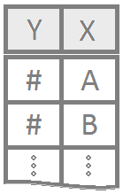

Table of Contents
Customize this page so that it becomes a useful Guide to Statistical Analysis for your current and future self.

1 Quantitative Variable
Question
How is this data distributed?
Is the mean zero or greater, less, equal to some number?
What is the mean?
Is the mean this value?
How much money gain or lose?
Is the median this value? (nonparametric test)
What is the median? (nonparametric test)
Wanted to know if they were getting ripped off
Example: Height A histogram is a good way to summarize a single quantitative variable.
One Sample T-Test
\(H_0: \mu = \text{some number}\)
\(H_a: \mu \ \left\{\underset{<}{\stackrel{>}{\neq}}\right\} \ \text{some number}\)
Graphics: boxplot, dot plot or histogram
Paired Sample T-Test
Questions
- Comparing two things and finding the difference between the two.
\(H_0: \mu_d = \text{some number, but typically 0}\)
\(H_a: \mu_d \ \left\{\underset{<}{\stackrel{>}{\neq}}\right\} \ \text{some number, but typically 0}\)
Graphics: boxplot, dot plot or histogram (of the differences)
Wilcoxon Signed-Rank
Skewed distributions
\(H_0: \text{median of differences} = 0\)
\(H_a: \text{median of differences} \ \left\{\underset{<}{\stackrel{>}{\neq}}\right\} \ 0\)
Symmetric distributions \[ H_0: \mu = 0 \] \[ H_a: \mu \neq 0 \]
Graphics: boxplot

1 Quantitative Variable | 2 Groups
Questions
Is there a difference in means/medians? Is one group stochastically dominant over the other?
Example: Height and gender
Independent T-Test
\(H_0: \mu_1 - \mu_2 = \text{some number, but typically 0}\) \(H_a: \mu_1 - \mu_2 \ \left\{\underset{<}{\stackrel{>}{\neq}}\right\} \ \text{some number, but typically 0}\)
Wilcoxon Rank Sum
Symmetric distributions
\(H_0: \text{difference in medians} = 0\)
\(H_a: \text{difference in medians} \neq 0\)
Different distributions
\(H_0: \text{the distributions are stochastically equal}\)
\(H_a: \text{one distribution is stochastically greater than the other}\)
Graphics: boxplot

1 Quantitative Variable | 3+ Groups
Questions
Are any of the means equal?
Use these to Analyis ANOVA
Example: Height, gender, eye color, race, age, class
ANOVA
Means
\[ H_0: \alpha_1 = \alpha_2 = \ldots = 0 \] \[ H_a: \alpha_i \neq 0 \ \text{for at least one} \ i \]
Graphics: Required QQ Plot and Residuals also need either xyplot or mPlot
Kruskal - Wallis Rank Sum
\[ H_0: \text{All samples are from the same distribution.} \] \[ H_a: \text{At least one sample's distribution is stochastically different.} \] Also could use ANOVA Format
\[ H_0: \mu_1 = \mu_2 = \ldots = \mu \] \[ H_a: \mu_i \neq \mu \ \text{for at least one} \ i \]

2 Quantitative Variables
Example: Height and Weight
Question
Is there a linear relationship between 2 number quantities?
Simple Linear Regression
\[ \left.\begin{array}{ll} H_0: \beta_1 = 0 \\ H_a: \beta_1 \neq 0 \end{array} \right\} \ \text{Slope Hypotheses}^{\quad \text{(most common)}}\quad\quad \]
\[ \left.\begin{array}{ll} H_0: \beta_0 = 0 \\ H_a: \beta_0 \neq 0 \end{array} \right\} \ \text{Intercept Hypotheses}^{\quad\text{(sometimes useful)}} \]
Graphics: Line of best fit plot

1 Quantitative Response | Multiple Explanatory Variables
X Values can be unrelated
Example: Height, weight, gender
Multiple Linear Regression
The most typical tests for multiple regression are t Tests for a single coefficient. The hypotheses for these t Tests are written as \[ H_0: \beta_j = 0 \] \[ H_a: \beta_j \neq 0 \]
- The F Test allows a single test for any group of hypotheses simultaneously.
The most commonly used F Test is the one given by the hypotheses \[ H_0: \beta_0 = \beta_1 = \cdots = \beta_p = 0 \] \[ H_a: \beta_j \neq 0 \ \text{for at least one}\ j \in \{0,1,\ldots,p\} \]

Binomial Response | 1 Explanatory Variable
Questions:
* Can gestation period be predicted based off mother’s age?
For which x values is true most likely?
Probability launch now will result in 0 ring failure given the opposite temp.
1 or 0 (success or failure) with hours spent doing homework.
8+hours=success/1 or 7-hours=failure/0
Logistic Regression
\[ H_0: \beta_1 = 0 \\ H_a: \beta_1 \neq 0 \]
Graphics: Custom plot with Curve

Binomial Response | Multiple Explanatory Variables
1 or 0 (success or failure) with hours spent doing homework.
8+hours=success/1 or 7-hours=failure/0 PLUS gender, eating berakfast, etc.

2 Qualitative Variables
Gender and hair color
Chi-Squared
Row variable and column variable are independent
Row and column variable are associated (not independent)
Independent pattern is the same (independent regardless of the group)
Associated pattern is different from each other (associated with the group)